Books beginning
z
111 books
-
፳ር በይነት ፳ር፳ር በይነት ፳ር Zir Beyinet Zir ደበበ ሰይፉ in የብርሃን ፍቅር
-
ዘሔርሙዘሔርሙ ZeHermu Fikire T/Mariam
-
ዘመነ መሳፍንትዘመነ መሳፍንት Zemene Mesafint
-
ዘመነ ታሪክ ከ1863 እስከ 1881 ዓ.ኢ በሐበሻ ዳምነው የፈነጠቁ የዘመነ ታሪክ ከ1863 እስከ 1881 ዓ.ኢ በሐበሻ ዳምነው የፈነጠቁ የኢትዮጵያ ሙስሊም ሊቀ ሊቃውንት አንፀባራቂ መዋዕለ ሕይወት የ አርበኝነት ውሎና የድርሳን አበርክቶ Zemene Tarik Ke1863 Eske 1881 A.I Behabesha Daminew Yefeneteku YeEthiopia Musilim Like Likawint Antsebaraki Mewa'ele Hiwot,YeArbegnite Wilona YeDirsan Aberkito Kedir Taju
-
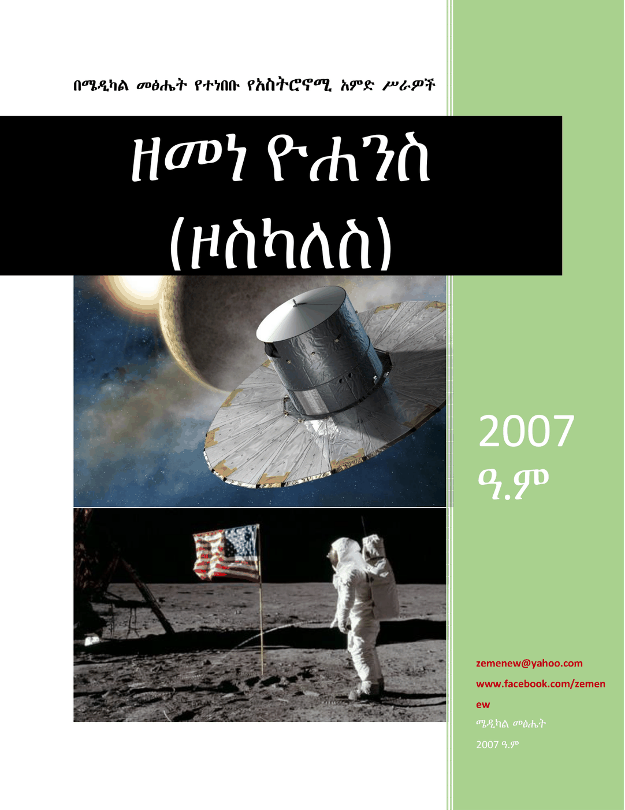
ዘመነ ዮሐንስ (ዞስካለስ) zemene yohenes (zoskales) ዘመነ ዮሐንስ (ዞስካለስ) · 2014 -
ዘመናዊ ሰዋስው አና መገብተ ልሳንዘመናዊ ሰዋስው አና መገብተ ልሳን Zemenawi Sewasiw Ena Megebte Lisan Yitibarek W/Michael
-
ዘመናዊ የሂሳብ አጋዥ መጽሃፍ ለ5ኛ እና ለ6ኛ ክፍልዘመናዊ የሂሳብ አጋዥ መጽሃፍ ለ5ኛ እና ለ6ኛ ክፍል Zemenawi Yehisab Agaz Metsaf Le 5Gna Ena 6Gna Kifil Fanthahun Hailemariam
-
ዘመናዊ የተሟላ የእርግዝና እና የወሊድ መመሪያዘመናዊ የተሟላ የእርግዝና እና የወሊድ መመሪያ Zemenawi Yetemuala YeErgizina Ena yeWelid Memaria Dr.Abreham Kibiret · 2013
-
ዘመናዊ የአውሮፓውያን የምግብ አዘገጃጀትዘመናዊ የአውሮፓውያን የምግብ አዘገጃጀት Zemenawi Yemegib Azegejajet Selam Berhanu, Yonas Teffera
-
ዘመናዊ የኬክና ዳቦ አዘገጃጀትዘመናዊ የኬክና ዳቦ አዘገጃጀት Zemenawi Yekekina Yedabo Azegejajet Kalkidan, Ribika
-
ዘመናዊ ያማርኛ ቋንቋ ማስተማሪያ ዘዴዘመናዊ ያማርኛ ቋንቋ ማስተማሪያ ዘዴ Zemenawi Yamaregna Kuankua Masitemaria Zede Marew Alemu (Dr.)
-
ዘመዴን ስሰመውዘመዴን ስሰመው Zmeden SissemeW ደበበ ሰይፉ in የብርሃን ፍቅር
-
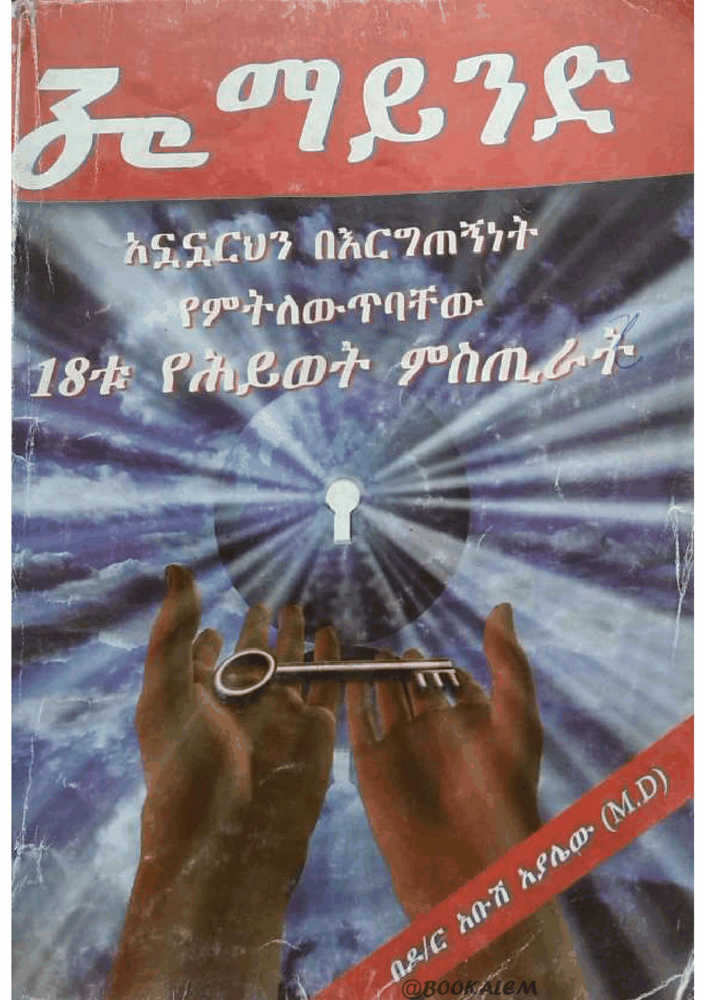
ዘ ማይንድ ze mayened ዶ/ር አቡሽ አያለው · 2008 -
ዘማይንድ 7-ዶላር ከቪሲዲ ጋርዘማይንድ 7-ዶላር ከቪሲዲ ጋር ZeMind 7 - Dollar (With VCD) Dr.Abush Ayalew
-
ዘማይንድ ቁ.3ዘማይንድ ቁ.3 Zemind Series Vol.3 Dr.Abush Ayalew · 2010
-
ዘ ማይንድ ቁ. 4ዘ ማይንድ ቁ. 4 Ze Mind Vol. 4 Dr.Abush Ayalew
-
ዘረኛ ማነው? ኢትዮጵያውያን ፍረዱ!ዘረኛ ማነው? ኢትዮጵያውያን ፍረዱ! Zeregna Manew? Ethiopiayawiyan Fredu ! Yitbarek Gidey
-
ዘረኝነት በክርስትና ዕይታዘረኝነት በክርስትና ዕይታ Zeregninet Bechiristina Eyita Deacon Endalew Melese
-
ዘር ቆርጣሚውዘር ቆርጣሚው Zer Kortamiw Alemayheu Gelagay
-
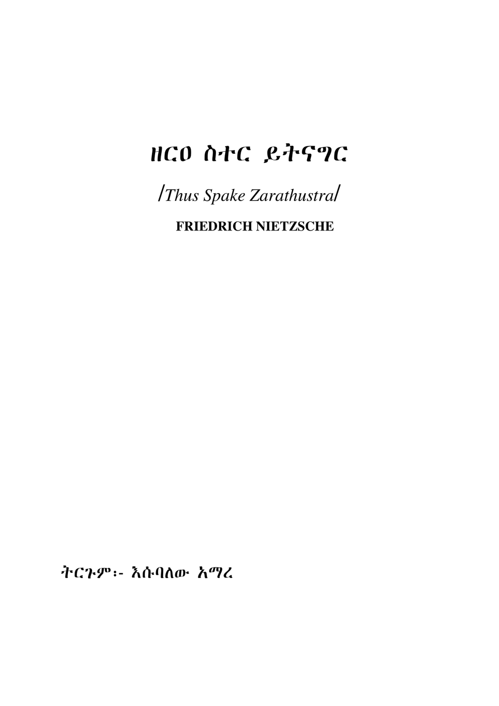
ዘርዐ ስተር ይትናግር zera seter yetnager FRIEDRICH NIETZSCHE, እሱባለው አማረ -
ዘርዓይ ደረስዘርዓይ ደረስ Zer'ay Deres Antineh Alemu
-
ዘርዕ እብርት ማሞችዘርዕ እብርት ማሞች Zer'e Ebrt Mamoch ደበበ ሰይፉ in የብርሃን ፍቅር
-
ዘርጋው (ከፍተኛ የአማርኛ መዝገበ ቃላት)ዘርጋው (ከፍተኛ የአማርኛ መዝገበ ቃላት) Zergaw ( Keftegna YeAmahric Mezgebe Kalat) Bahiru Zergaw Gizaw · 2014
-
ዘ.ሲ.አይ.ኤ.ሴራዘ.ሲ.አይ.ኤ.ሴራ Ze.C.I.A Sera Asegid Eshetu Zewdu
-
ዘበናዊ ሰዋስው ቋንቋ ትግርኛዘበናዊ ሰዋስው ቋንቋ ትግርኛ Zebenawi Sewasw Kuankua Tigirigna Daniel Teklu Reda (Assistant Professor) · 2012
-
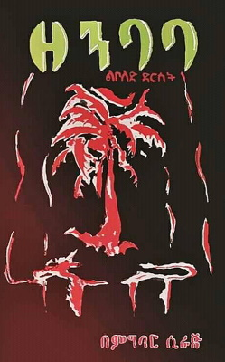
ዘንባባ zenbaba ምግባር ሲራጅ · 2011 -
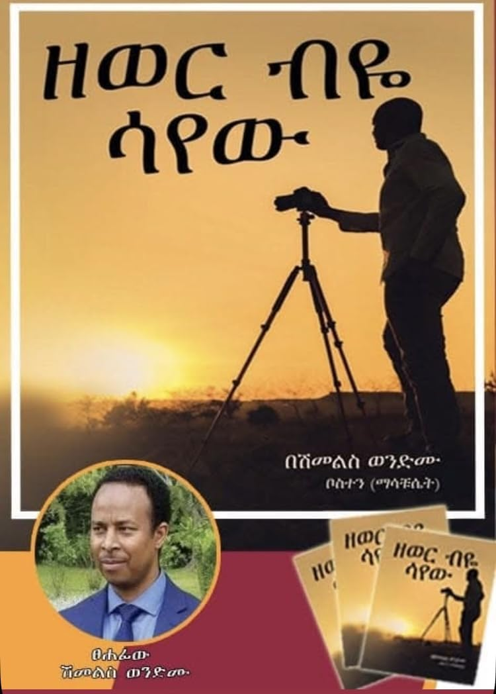
ዘወር ብዬ ሳየው Zewer Beye Sayew Dr Shimelis Wondimu · 2025 -
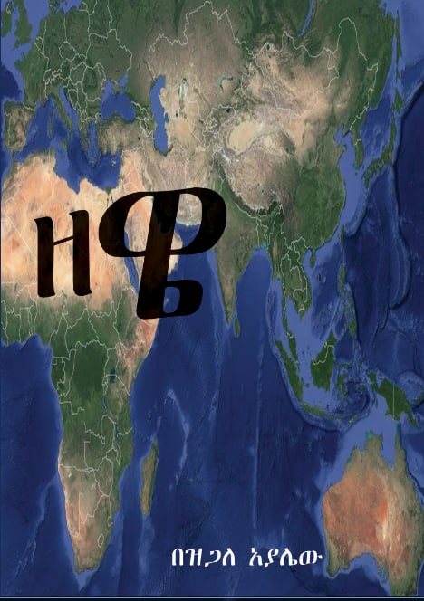
ዘዌ zewe ዝጋለ አያሌው · 2015 -
ዘውድ ያልደፋው ንጉሥ (የለውጥ ሐዋርያ)ዘውድ ያልደፋው ንጉሥ (የለውጥ ሐዋርያ) Zewid Yaldefaw Nigus (Yelewit Hawariya) Dereje Tekle Weldemariam
-
ዘይእብድ ጣዕሳዘይእብድ ጣዕሳ Zey'ebid Tae'sa Adhana Godifey · 2014
-
ዘጠኙ በዓላትዘጠኙ በዓላት Zetegnu Be'alat Selamawit Ghirmay · 2018
-
ዘጽጌ ዚቅዘጽጌ ዚቅ Zetsigie Zik
-
ዘ-ፕሬዚደንትዘ-ፕሬዚደንት Ze-President Tadiwos Getahun · 2013
-
ዙበይዳዙበይዳ Zubeyda Alex Abreham · 2015
-
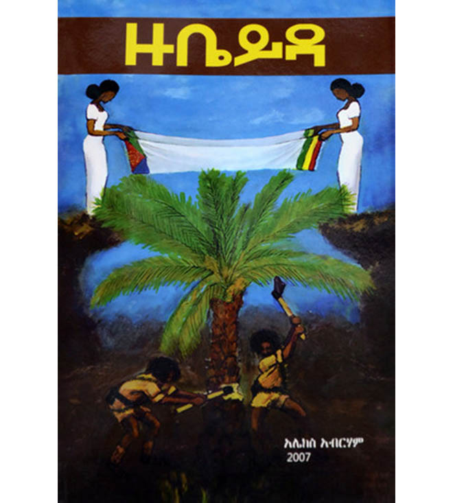
ዙቤይዳ ) Zubeyda Alex Abreham( አሌክስ አብርሃም, ግሩም ተበጀ · 2016 -
 ዙቤይዳ
zubeyda
ዙቤይዳ
zubeyda
-
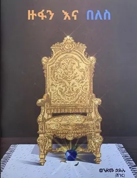
ዙፋን እና በለስ zufan ena beles ወንድሙ ሀይሉ · 2013 -
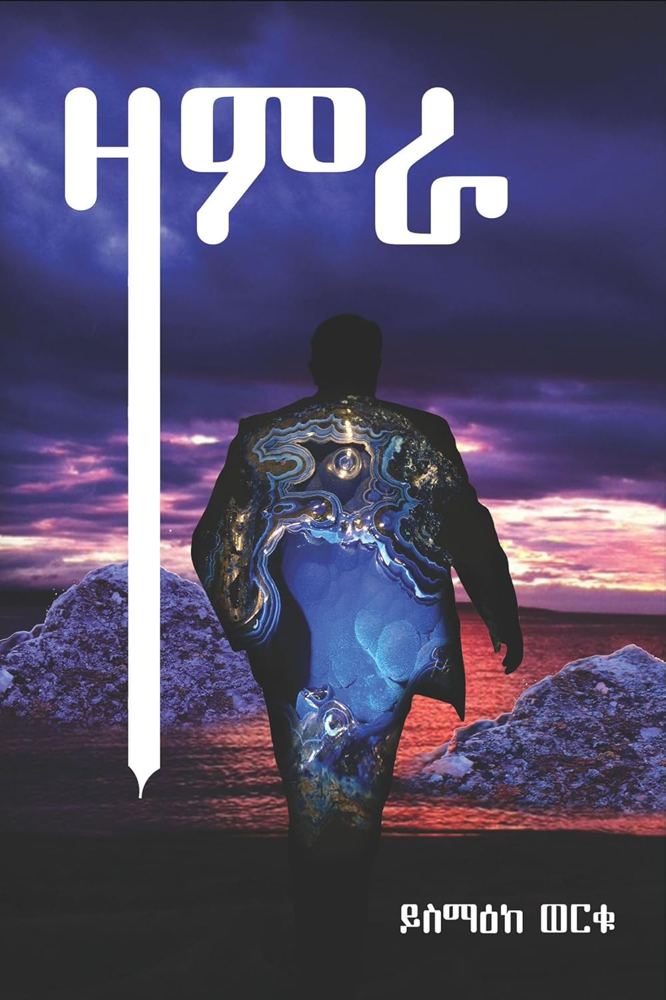
ዛምራ Zamra Yismake Worku · 2025 -
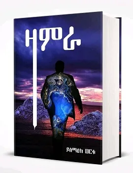
ዛምራ zamra ይስማዕከ ወርቁ · 2021 -
ዛሬም እንደ ትናንት?ዛሬም እንደ ትናንት? Zarem Ende Tinant? Mesfin W/Mariam
-
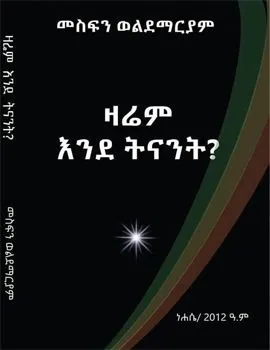
ዛሬም እንደ ትናንት? zarem ende tenanet? ፕ/ር መስፍን ወልደማርያም 2012 · 2012 -
ዛሬም እንጉርጉሮዛሬም እንጉርጉሮ Zarem Engurguro Mesfin W/Mariam · 2013
-
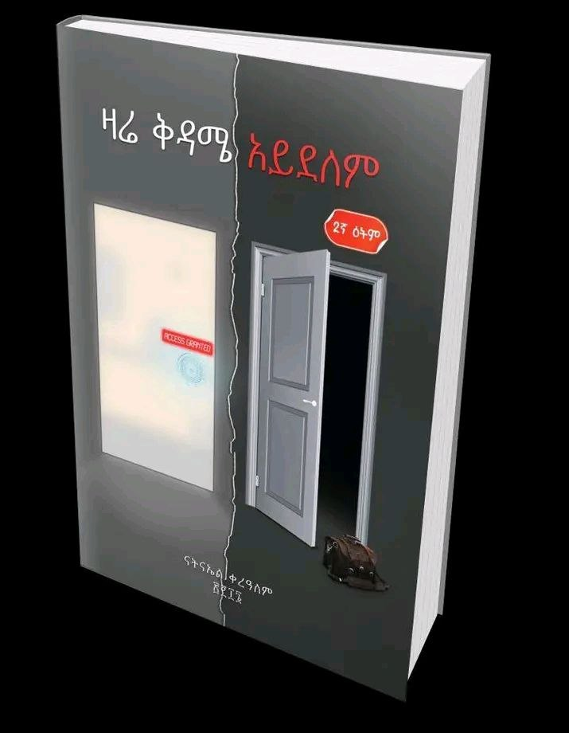
ዛሬ ቅዳሜ አይደለም Zare Kedame Aydelem Natnael Kerealem · 2024 -
ዛንታ 100 ዓመት ገብረክርስቶስ ገ/እግዚአብሔርዛንታ 100 ዓመት ገብረክርስቶስ ገ/እግዚአብሔር Zanta 100 Amet Gebrekiristos G/Egziabher Nigisti Muse G/kiristos · 2021
-
ዛንታ ሰገናት ወያነ (1970-1987 E.C)ዛንታ ሰገናት ወያነ (1970-1987 E.C) Zanita Segenat Weyane (1970-1987) Haben Fantaygebru · 2014
-
ዛንታታት ህያብ 1 (ኣንበሳን ኣንጭዋን)ዛንታታት ህያብ 1 (ኣንበሳን ኣንጭዋን) Zanitatat Hiyab 1(Anibesan Anichewan) Gayl Oscreen
-
ዛንታታት ህያብ 2 (ኣንበሳ "በይዛኻ" ምባል ተምሃረ)ዛንታታት ህያብ 2 (ኣንበሳ "በይዛኻ" ምባል ተምሃረ) Zanitatat Hiyab 2 (anibesa "Beyzaha" Mibal Temihare Gayl Oscreen
-
ዛንታታት ህያብ 3 (ዝጠፍአ ሬማ)ዛንታታት ህያብ 3 (ዝጠፍአ ሬማ) Zanitatat Hiyab 3(zitef'a Rema ) Gayl Oscreen
-
ዛንታታት ህያብ 4ዛንታታት ህያብ 4 Zanitatat Hiyab 4 Gayl Oscreen
-
ዛንጀርዛንጀር Zanjer Tizita Tefera
-
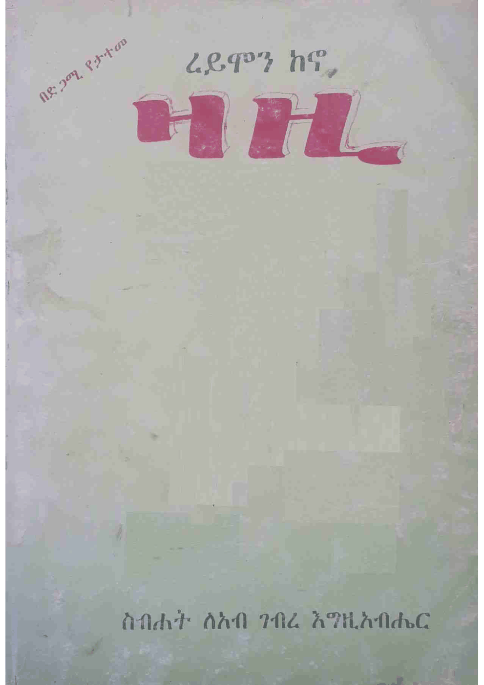
ዛዚ zazi ረይሞን ከኖ, ስብሀት ገብረእግዚአብሄር · 2009 -
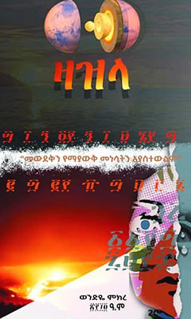
ዛዝላ zazla ወንድዬ ምክረ · 2014 -
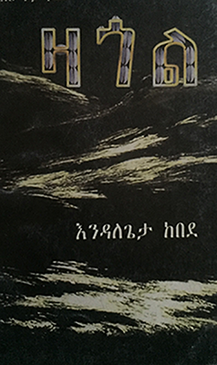
ዛጎል zagol እንዳለጌታ ከበደ -
 ዛፉ
zafu
ዛፉ
zafu
-
ዛፎቹ ተገነደሱዛፎቹ ተገነደሱ Zafochu Tegenedesu
-
ዜሮ ሰዓት ፩ዜሮ ሰዓት ፩ Zero Se'at 1 Zumra (yTsYeHa) · 2013
-
ዜና ሐዋርያትዜና ሐዋርያት Zena Hawareyat Hiruy W/Silase · 2015
-
ዜናሁ ለመንፈስ ቅዱስዜናሁ ለመንፈስ ቅዱስ Zenahu Lemenfes Kidus Memihir Sisay Wogayehu
-
ዜና ሕይወት ዘቅድስተ ቅዱሳን እመ አምላክዜና ሕይወት ዘቅድስተ ቅዱሳን እመ አምላክ Zena Hiwote ZeKidiste Kidusan Eme Amilak Aleka Ayalew Tamiru
-
ዜና ላል ይበላልዜና ላል ይበላል Zena Lal Yibelale Dejazmach Birhane Meskel Deseta
-
ዜና ሥላሴ ተአምረ ሥላሴ ወምስለ መልክአ ሥላሴ የኣጽዋማት ማውጫዜና ሥላሴ ተአምረ ሥላሴ ወምስለ መልክአ ሥላሴ የኣጽዋማት ማውጫ Zena Silase,Te'amire Silase,Wemisile Melkea Silase, YeAtsiwamat Mawicha Merigeta Sirak Gebere Aregawi
-
ዜና ስደቷ ለቅድስት ድንግል ማርያምዜና ስደቷ ለቅድስት ድንግል ማርያም Zena Sidetua Lekidist Dingil Maryam
-
ዜና ባስልዮስ ሊቀ ጳጳሳት ኢትዮጵያዜና ባስልዮስ ሊቀ ጳጳሳት ኢትዮጵያ Zena Abune Basilios, Patriarch of Ethiopia
-
ዜና ባስልዮስ ሊቀ ጳጳሳት ኢትዮጵያዊዜና ባስልዮስ ሊቀ ጳጳሳት ኢትዮጵያዊ Zena Basiliyos Liqe Papasat Ethiopiayawi
-
ዜና አበው (ዘውእቱ መጽሐፈ ገነት ካለእ)(ቅጽ 1)ዜና አበው (ዘውእቱ መጽሐፈ ገነት ካለእ)(ቅጽ 1) Zena Abew (Zewetu Metsiafe Genet Kale) (Kits 1) Memihir Abraham Fekade
-
ዜና አበው (ዘውእቱ መጽሐፈ ገነት ካለእ)(ቅጽ 2)ዜና አበው (ዘውእቱ መጽሐፈ ገነት ካለእ)(ቅጽ 2) Zena Abew (Zewetu Metsiafe Genet Kale) (Kits 2) Memihir Abraham Fekade
-
ዜና አይሁድዜና አይሁድ Zena Ayhud Melke'a Tsehay Melke'a Christos Nebyou · 2015
-
ዜና ኢትዮጵያ (ከአንደኛ ፒዮሪ እስከ ላሊበላ)ዜና ኢትዮጵያ (ከአንደኛ ፒዮሪ እስከ ላሊበላ) Zena Ethiopia (KeAndegna Piyori Eske Lalibela) Memihr Komos Aba kinfe Gebriel G/Eyesus
-
ዜና ኢየሩሳሌምዜና ኢየሩሳሌም Zena Eiyerusalem
-
ዜናዊ ፓርላማ (የኢትዮጵያ የሕግ መምሪያና መወሰኛ ምክር ቤት ታሪክ)ዜናዊ ፓርላማ (የኢትዮጵያ የሕግ መምሪያና መወሰኛ ምክር ቤት ታሪክ) Zenawi Parlama (YeEthiopia YeHig Memriyana Mewesegna Mikir Bet Tarik) Belete Gebre · 1954
-
ዜና ጳጳሳት ኢትዮጵያንዜና ጳጳሳት ኢትዮጵያን Zena Papasat Ethiopian Dr.Mersha Alehegn
-
ዜጋ (የግብረሶዶማውያን እውነተኛ ታሪኮች)ዜጋ (የግብረሶዶማውያን እውነተኛ ታሪኮች) Zega (YeGibresedomawiyan Ewnetegna Tarik) Freweyni Gidey
-
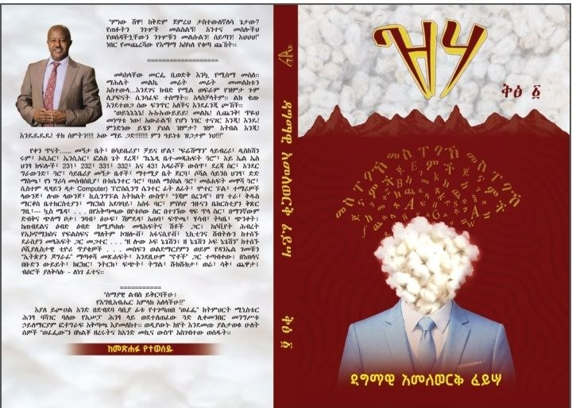
ዝሃ Zeha Dagmawi Amelewerk, Author Dagmawi Amelewerk · 2026 -
ዝሆን ዘሜዝሆን ዘሜ Zihon Zeme Buruktawit Tigabu
-
ዝለት (የጊዜው መንፈስ)ዝለት (የጊዜው መንፈስ) Zilet (YeGizew Menfes) M.W.M
-
ዝማምዬዝማምዬ Zimamiye ተስፋዬ አየለ
-
ዝማሬ ወመዋሥዕት እምዓት እስከ ዓመትዝማሬ ወመዋሥዕት እምዓት እስከ ዓመት Zimare WeMewas'et E'mat Eske Amet H/Michael (Nahu Senay) T/Eyesus
-
ዝማሬ ወመዋሥእት ዘደረሰ ቅዱስ ያሬድ ኢትዮጵያዊዝማሬ ወመዋሥእት ዘደረሰ ቅዱስ ያሬድ ኢትዮጵያዊ Zimare Wemewaset Zederese Kidus Yared Ethiopiyawi Merigeta Mezgebu Sibhat · 2025
-
ዝምታዝምታ Zimita Hailegiorgis Mamo
-
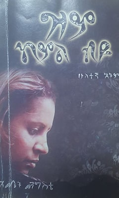
ዝም ከምል ብዬ zem kemel beye እመቤት መንግስቴ · 2014 -
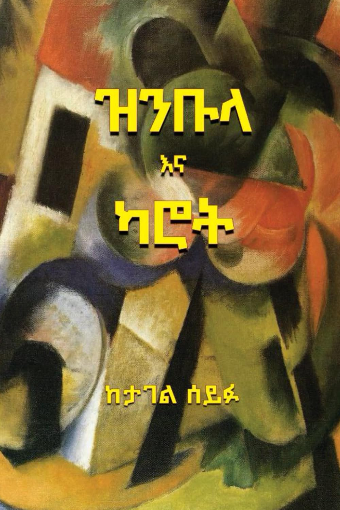
ዝንቡላ እና ካሮት Zinbula and Carrot Tagel Seifu, Makida Arshi · 2025 -
ዝንቡላ እና ካሮትዝንቡላ እና ካሮት Zinbula ena Karot
-
ዝክረ ሊቃውንት ራብዓይ(፬ኛ)ዝክረ ሊቃውንት ራብዓይ(፬ኛ) Zikre Likawint Rabay (4gna) Melkea Mikir Kefiyalew Merahi Gune
-
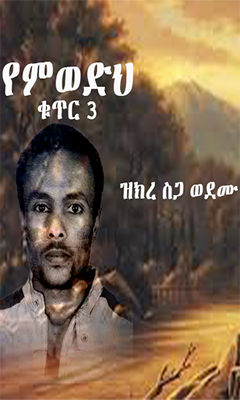
ዝክረ ስጋወ ደሙ ክፍል ሶስት zekre segawe demu kefel soset አምሐሥላሴ አማረ · 1998 -
ዝክረ-ቃል (ዘውእቱ መጽሐፈ ዚቅ ወመዝሙር)ዝክረ-ቃል (ዘውእቱ መጽሐፈ ዚቅ ወመዝሙር) Zikire Kal (Zew'etu Metshafe Zik Wemezmur) Megabe A'elaf Henok W/Michael
-
ዝክረ ቅዱሳን አንስት ዘተዋህዶ ፩ዝክረ ቅዱሳን አንስት ዘተዋህዶ ፩ Zikire Kidusan Anist ZeTewahido 1
-
ዝክረ ቅዱሳን ዘተዋህዶ (ሶስተኛ መጽሐፍ)ዝክረ ቅዱሳን ዘተዋህዶ (ሶስተኛ መጽሐፍ) Zikire Kidusan ZeTewahido Vol.3
-
ዝክረ ቅዱሳን ዘተዋሕዶ ፩ኛ መጽሐፍዝክረ ቅዱሳን ዘተዋሕዶ ፩ኛ መጽሐፍ Zikre Kidusan ZeTewahdo 1Gna Metshaf · 2012
-
ዝክረ ነገርዝክረ ነገር Zikere Neger Blaten Geta Mahteme Selassie Wolde Meskel
-
ዝክረ ነገርዝክረ ነገር Zikire Neger Mela'ke Tabor Teshome Zerihun · 2017
-
ዝክረ ነገር ዘየኔታ አክሊሊ (ጻድቁ አባት) ዘብሔረ መንዝ (ከ፲፱፻፯ዝክረ ነገር ዘየኔታ አክሊሊ (ጻድቁ አባት) ዘብሔረ መንዝ (ከ፲፱፻፯ (1907)-፳፻፲፫ (2013) ዓ.ም zekre neger zeyeneta aklili (tsadqu abat) zebhere menez (ke1091007 (1907)-20100103 (2013) a.me Megabe hiruyan Yemane Birhan Getahun
-
ዝክረ አበው (መልክአ ጉባኤ)ዝክረ አበው (መልክአ ጉባኤ) Zikre Abew (Mel'kea Gubae)
-
ዝክረ አበው (የላይ ቤት አቋቋም መጽሐፍ)ዝክረ አበው (የላይ ቤት አቋቋም መጽሐፍ) Zikre Abew Meleake Selam Memihir Aemiro Bizuneh
-
ዝክረ የኔታዝክረ የኔታ Zikire Yeneta BeMillion Belete Assefa · 2015
-
ዝክረ የኔታ ኹለተኛዝክረ የኔታ ኹለተኛ Zikire Yeneta Huletegna Milion Belete Assefa
-
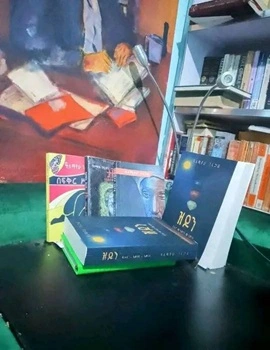
ዝይን zeyen አለማየሁ ገላጋይ · 2017 -
ዝዶን (ፍቅር እውነት እምነት) (ሶስት መጽሃፍት በአንድ)ዝዶን (ፍቅር እውነት እምነት) (ሶስት መጽሃፍት በአንድ) Zidon (Fikir,Ewnet,Eminet) (Three books in one binding) አለማየሁ ገላጋይ
-
ዝጎራዝጎራ Zigora ዓለማየሁ ዋሴ እሸቴ
-
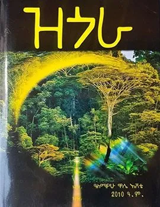
ዝጎራ zegora አለማየሁ ዋሴ -
ዝፍ ያለውዝፍ ያለው Zef Yalew Lt.Col Tefera Kasa · 2016
-
ዠምድዠምድ Zhemid Habtamu Belete
-
ዣንዣን Zhan Habtamu Asimamaw
-
 ዣንቶዣራ
zhantozhara
ዣንቶዣራ
zhantozhara
-
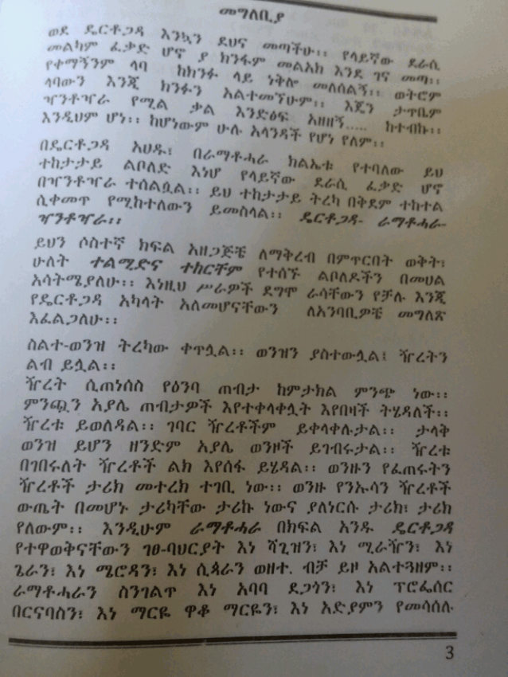
ዣንቶዣራ zhantozhara ይስማዕከ ወርቁ -
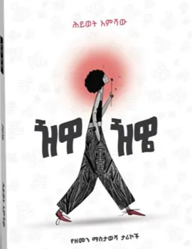
ዥዋዥዌ zhewazhwe Hiwot Emishaw · 2025 -
Zaren Ketegubet . . .Zaren Ketegubet . . . Yeshaw Tesema, Tsigereda Hailu, Mesfin Asefa, Teshager Shiferaw, Sosena Ashenafi, Sosena Taye, Solomon Taye, Yzena Werku, Hailemariam Mamo
-
Zemenawi enkokelesheZemenawi enkokeleshe Asefa Shiferaw
-
Zemenawi ye'cake ena Ye'dabo azegejajetZemenawi ye'cake ena Ye'dabo azegejajet Chef Yonas Taffara, Chef Nigussie Kebebew
-
Ze mind, volume 1Ze mind, volume 1 Dr.Abush Ayalew
-
Ze mind, volume 2Ze mind, volume 2 Dr.Abush Ayalew
-
ፄላን እንዲህፄላን እንዲህ Zelan Endih ደበበ ሰይፉ in የብርሃን ፍቅር